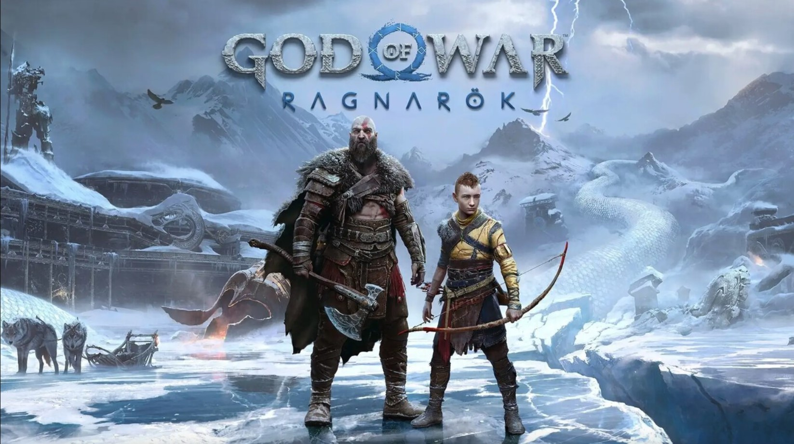

God of War Ragnarok
CLP $45.990
CLP $45.990
Desde Santa Monica Studio llega la secuela del aclamado por la crítica God of War (2018). Fimbulvetr ya está en camino. Kratos y Atreus deben viajar a cada uno de los nueve reinos en búsqueda de respuestas, mientras que las fuerzas asgardianas se preparan para una batalla profetizada que terminará con el mundo. En el camino explorarán paisajes increíbles y míticos, y se enfrentarán a aterradores enemigos en la forma de dioses nórdicos y monstruos. La amenaza del Ragnarök cada vez está más cerca. Kratos y Atreus deben elegir entre su propia seguridad y la seguridad de los reinos.